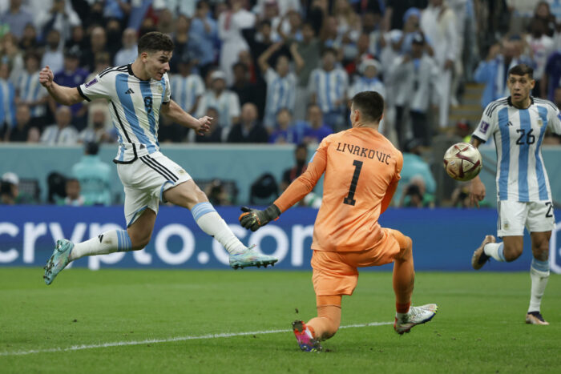
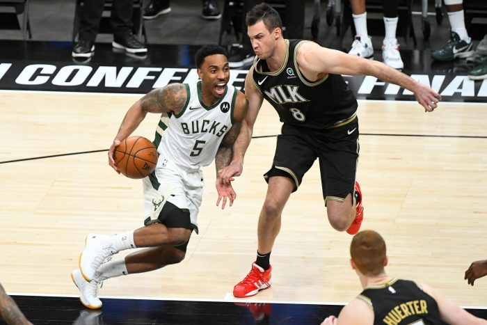
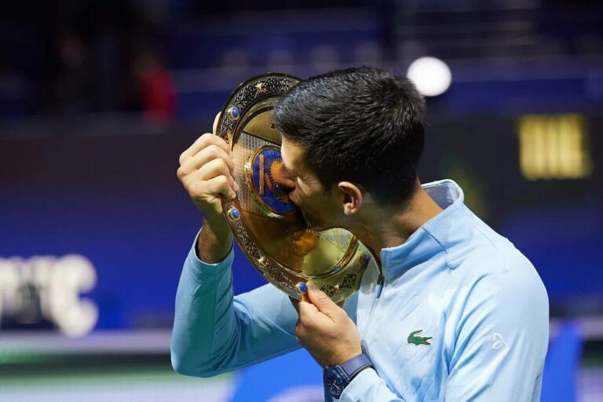

Fútbol

¡Gol! ¡Argentina en acción! Un momento de tensión y emoción pura en la cancha. La destreza y precisión de un jugador Julian Alvarez ante un arquero que lo da todo. ¡Un partido para recordar!
Basketball

"Un duelo de titanes en la cancha. El baloncesto de alto nivel se vive al límite. ¡Qué partidazo!
Tenis

Un beso al triunfo. La dedicación, el esfuerzo y la pasión se ven reflejados en este momento mágico. ¡Campeón!